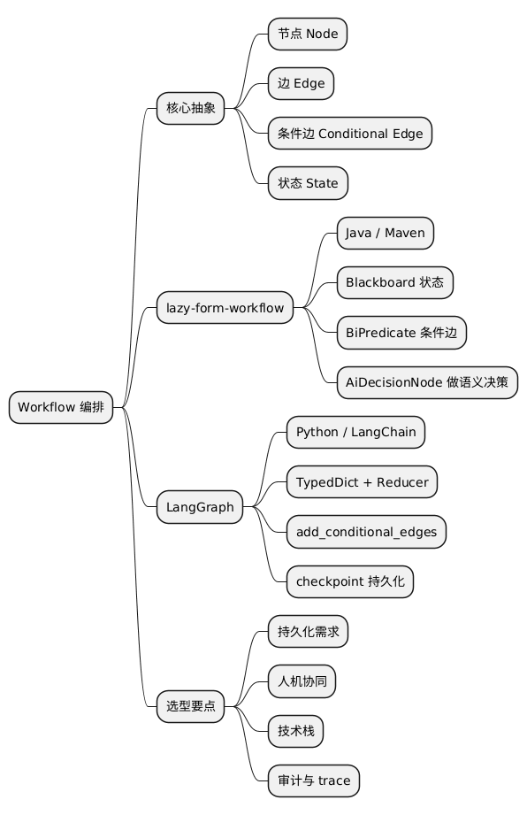

从手搓 Workflow 到 LangGraph：AI 流程编排的两种路径
Posted on Sun 08 February 2026 in AI • 2 min read
| Abstract | 从手搓 Workflow 到 LangGraph：AI 流程编排的两种路径 |
|---|---|
| Authors | Walter Fan |
| Category | Journal |
| Status | v1.0 |
| Updated | 2026-02-08 |
| License | CC-BY-NC-ND 4.0 |
短大纲（给忙人）
展开看看
- **Workflow 的本质**：把流程当 DAG 跑，节点做事、边决定往哪跳 - **手搓版 lazy-form-workflow**：Java 实现，Blackboard 传状态，条件边用 `BiPredicate` 决定路由 - **LangGraph 的做法**：`StateGraph` + TypedDict 状态 + `add_conditional_edges`，更偏 Python/LangChain 生态 - **对比与取舍**：两者思路一致，LangGraph 更成熟、生态更全；自研适合做可控、可嵌入的轻量编排 - **可执行清单**：选型时看持久化、人机协作、多 Agent 等需求，再决定用现成框架还是自研 - **常见坑**：priority 顺序、条件边覆盖不全导致静默结束——建图时务必覆盖所有分支开头：审批流程改了三次，Prompt 也改了三次，最后没人知道逻辑在哪
你遇到过没？需求说 "超过 1000 块要人工审" ，改完又说 "病假超过 3 天也要" ，再加一条 "周末加班调休走快速通道" ……每改一次，你就在 Prompt 里塞一段话，最后那个 Prompt 像一锅乱炖：谁都能往里加料，但没人敢动筷子——怕哪句逻辑冲突了。
流程一复杂，光靠 "堆 Prompt" 就顶不住了。分支多、要查库、要调接口、还要有审计，你总不能靠 "请继续" 把整条链路串起来。
更靠谱的做法是：把流程当程序写出来。节点做具体事，边决定往哪跳，状态在中间传递。这就是 Workflow 编排的思想——跟画流程图差不多，只不过这张图真的能跑。
我去年在 lazy-form-instructor 里手搓了一个简陋的 workflow 引擎 lazy-form-workflow，后来又仔细看了 LangGraph 的实现。两者思路高度一致，只是语言、生态和细节不一样。这篇就对照着讲讲，顺便帮你少踩我踩过的坑。
1) 本质：Workflow 就是 "流程图 + 状态机" 的合体
不管自研还是 LangGraph，核心抽象都一样，可以用四个词概括：
- 节点（Node）：执行一步逻辑，读写共享状态。相当于流程图里的一个方框。
- 边（Edge）：连接节点，决定 "执行完 A 之后去哪" 。相当于箭头。
- 条件边（Conditional Edge）：根据当前状态或节点输出，选择走哪条边。相当于流程图里的菱形判断框。
- 状态（State）：在节点之间传递的共享数据。相当于 "全局变量" ，每个节点都能读能写。
所以 Workflow 本质上就是一个有向图：你画出来的流程图，真的能跑。
图一般是 DAG（有向无环图），否则会死循环。LangGraph 支持环——比如 Agent 循环调用工具、直到满足条件才停——但会通过 checkpoint 和步数限制来控制，不会真给你跑到天荒地老。
2) 手搓版：lazy-form-workflow 怎么玩的
项目在 lazy-form-instructor/lazy-form-workflow，Java、Maven，零依赖 LangChain，适合嵌到现有 Java 后端里。当时做它的动机很简单：我们有个请假审批系统，规则一变再变，不想每次都改 Prompt，就想 "能不能把流程当图配置出来" 。
核心组件
| 组件 | 作用 |
|---|---|
WorkflowGraph |
存节点和边，提供 validate() 做环检测 |
WorkflowNode |
接口，execute(ctx) 返回 NodeResult |
WorkflowEdge |
有 BiPredicate<WorkflowContext, NodeResult>，决定能不能走这条边 |
WorkflowContext |
Blackboard 模式，vars、state、traceLog 等 |
WorkflowEngine |
从起点开始循环执行：跑节点 → 记 trace → 找下一条边 → 下一节点 |
节点类型
StartNode/EndNode：入口和出口ActionNode：做确定性操作（查库、调 API 等）LogicDecisionNode：用Predicate<WorkflowContext>做布尔判断AiDecisionNode：调 LLM 做语义决策（审批、路由等），带置信度
条件边示例
graph.addEdge(new WorkflowEdge("check_amount", "high_value",
(ctx, result) -> result.payload().equals(true), "HIGH_VALUE", 1));
graph.addEdge(new WorkflowEdge("check_amount", "low_value",
(ctx, result) -> result.payload().equals(false), "LOW_VALUE", 0));
WorkflowEngine 按 priority 排序出边，找到第一个 canTraverse(ctx, result) 为 true 的边，就跳到对应节点。
坑点提示：priority 数值越大越优先。我一开始写反了，结果 "低金额" 分支总是先匹配，调试了半天才反应过来——这种顺序问题，写单元测试时一定要覆盖 "每条边都能走到" 的场景。
状态传递：Blackboard
WorkflowContext 就是一块共享黑板：
request：解析后的表单/请求state：字符串状态（如"PENDING_APPROVAL"）vars：键值对，节点可读写traceLog：执行轨迹，便于审计
每个节点拿到 ctx，改完再 return，下一个节点看到的已经是更新后的状态。
3) LangGraph：StateGraph + 条件边
LangGraph 是 LangChain 生态里的流程编排框架，用 Python 写，文档和示例都很丰富。
状态：TypedDict + Reducer
状态用 TypedDict 定义，每个字段的类型可以带 Reducer。为什么要 Reducer？因为多个节点可能都会往 messages 里追加内容，如果直接覆盖会丢数据，所以用 Reducer 定义 "怎么合并" ——比如 add_messages 就是 "老列表 + 新列表" 拼接。
class GraphState(TypedDict):
question: str
generation: str
documents: List[str]
messages: Annotated[list, add_messages] # 用 reducer 合并
节点函数签名为 (state) -> dict，返回的 dict 会按 Reducer 规则合并进总状态。
建图：add_node / add_edge / add_conditional_edges
workflow = StateGraph(GraphState)
workflow.add_node("retrieve", retrieve)
workflow.add_node("grade_documents", grade_documents)
workflow.add_node("generate", generate)
workflow.add_edge(START, "retrieve")
workflow.add_edge("retrieve", "grade_documents")
workflow.add_conditional_edges(
"grade_documents",
decide_to_generate, # 路由函数，返回 "generate" 或 "retrieve"
{"generate": "generate", "retrieve": "retrieve"}
)
workflow.add_edge("generate", END)
app = workflow.compile()
result = app.invoke({"question": "..."})
add_conditional_edges 的第二个参数是一个函数，输入是 state，输出是边的 key（如 "generate"），用来查第三个参数里的映射，得到下一个节点。
和 lazy-form-workflow 的对应关系
| lazy-form-workflow | LangGraph |
|---|---|
| WorkflowContext | TypedDict state |
| WorkflowNode.execute(ctx) | node(state) -> dict |
| WorkflowEdge + BiPredicate | add_conditional_edges(fn, mapping) |
| WorkflowEngine.execute() | graph.compile().invoke() |
| traceLog | 需自行在 state 里维护或靠 checkpoint |
4) 对比：什么时候用哪个
| 维度 | lazy-form-workflow | LangGraph |
|---|---|---|
| 语言 | Java | Python |
| 生态 | 独立，可嵌 Java 服务 | LangChain/LangSmith 等 |
| 状态 | Blackboard (vars/state) | TypedDict + Reducer |
| 持久化 | 暂无 | checkpoint（内存/Redis/Sqlite） |
| 人机协同 | NodeResult.waiting() 预留 | human-in-the-loop |
| 适用 | 审批、表单、内部流程 | Agent、RAG、多步推理 |
我自己选的话：审批、表单、内部流程这种业务，用 Java 自研能嵌进现有系统，trace 也好定制；Agent、RAG、多步推理这种，直接上 LangGraph，别 reinvent the wheel。
5) 可执行清单 + 常见坑
如果你在考虑 "要不要自研 workflow" 或 "要不要切到 LangGraph" ，先按下面 checklist 过一遍：
- [ ] 持久化：流程要断点续跑吗？LangGraph 有 checkpoint，自研要自己设计
- [ ] 人机协同：有没有人工审批、二次确认？两边都能做，LangGraph 有现成 human-in-the-loop
- [ ] 多 Agent：需要多个 Agent 协作吗？LangGraph 的 Supervisor 模式更成熟
- [ ] 技术栈：团队主力是 Java 还是 Python？会影响选型
- [ ] 审计：trace 要存哪里、查多久？自研的 traceLog 容易定制
常见坑：条件边没覆盖全会导致流程 "静默结束" ——找不到满足的边就直接停，既没报错也没跑到 End。所以建图时务必保证每个分支节点的出边能覆盖所有可能输出；或者显式加一条 default 边，把 "意外情况" 路由到人工或失败处理节点。
总结与思维导图
两种实现的本质都是：图 + 状态 + 条件边。区别在于状态模型（Blackboard vs TypedDict）、生态和持久化能力。选型时先想清楚持久化、人机协同、多 Agent 这些需求，再决定用现成框架还是自研。
如果你已经在一个框架里踩过坑，或者有更好的选型经验，欢迎在评论区聊聊——这种 "流程当图跑" 的思路，以后会越来越常见，早点把坑踩明白，省得后面重构。
@startmindmap
* Workflow 编排
** 核心抽象
*** 节点 Node
*** 边 Edge
*** 条件边 Conditional Edge
*** 状态 State
** lazy-form-workflow
*** Java / Maven
*** Blackboard 状态
*** BiPredicate 条件边
*** AiDecisionNode 做语义决策
** LangGraph
*** Python / LangChain
*** TypedDict + Reducer
*** add_conditional_edges
*** checkpoint 持久化
** 选型要点
*** 持久化需求
*** 人机协同
*** 技术栈
*** 审计与 trace
@endmindmap

扩展阅读
本作品采用知识共享署名-非商业性使用-禁止演绎 4.0 国际许可协议进行许可。